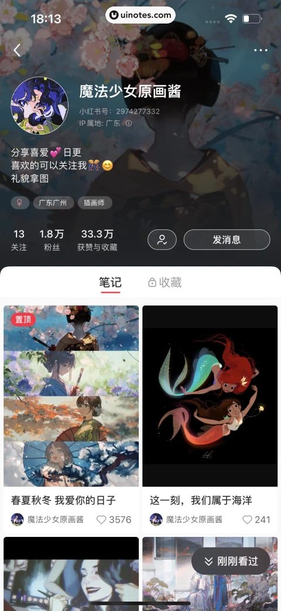
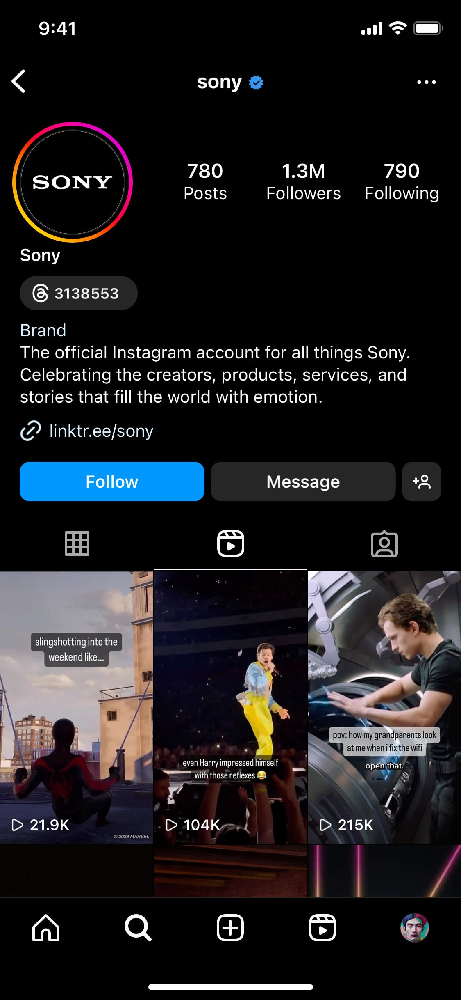
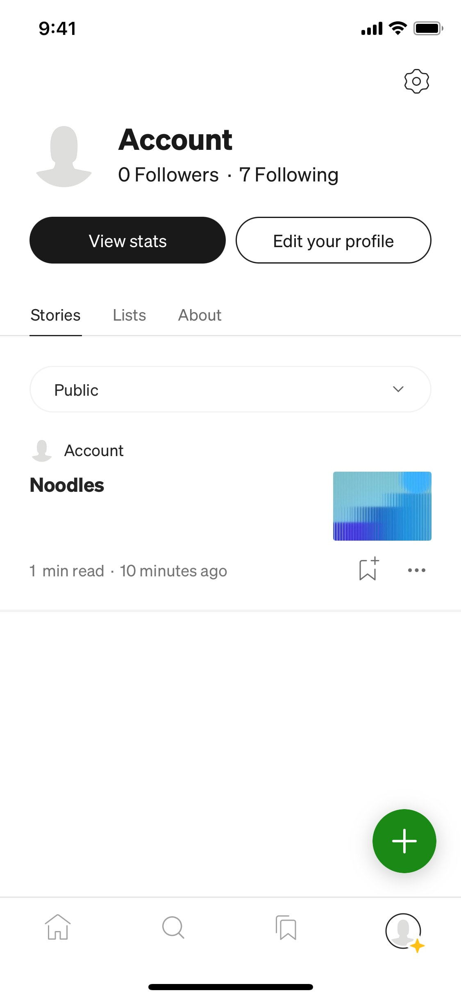

主页型: 内容资产首页 身份区: 头像、昵称、ID/IP、简介 关系信息: 关注、粉丝、获赞与收藏统计 内容资产: 笔记/收藏标签与多列网格 主要动作: 关注与私信
https://uinotes.com/pin/281912682124983449
比较国内外热门内容社区用户个人主页的身份表达、关系数据、内容资产与导航组织方式，为产品设计提供真实移动端 UI 参考。
分类维度：个人主页中身份、关系与内容资产的编排方式 · Agent 在逐张查看本轮通过语义与机械校验的三张 collected App Screen 后，按实际可见的信息层次与导航关系分类：小红书和 Instagram 都把关系数据、关注动作与内容网格放在同一公开主页，Medium 则以账户导航、创作资产入口和统计/编辑动作组成个人页。该维度来自本轮素材观察，不由 product_type、notes 或关键词推断。 · 有效样本：3
小红书和 Instagram 都在个人身份头部附近展示关注关系/统计与 Follow 或 Message 动作，并以笔记或帖子网格作为主要内容资产入口。

https://uinotes.com/pin/281912682124983449

https://refero.design/screens/36a881f9-b456-47f9-b03c-f65bcde89c2a?query=Instagram%20profile&source=search
Medium Screen 以 Followers/Following、View stats、Edit your profile 组成账户控制区，下面通过 Stories、Lists、About 和文章入口组织创作资产，而不是以图片网格为主。

https://refero.design/screens/5b472505-d300-4558-b9ce-8706d1220181?query=Medium%20profile&source=search